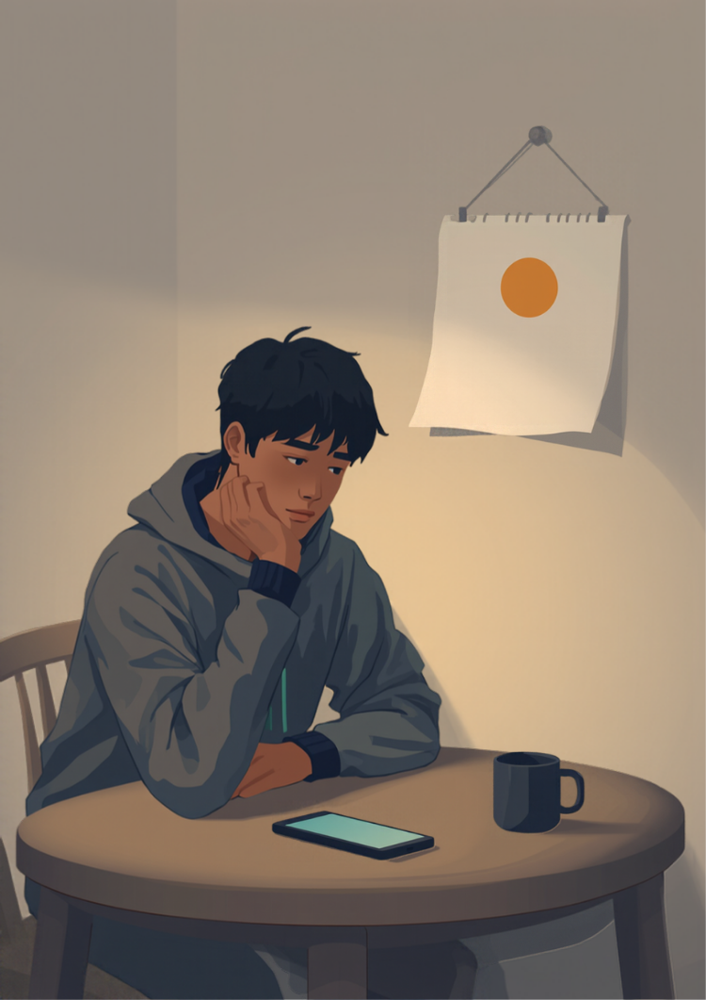
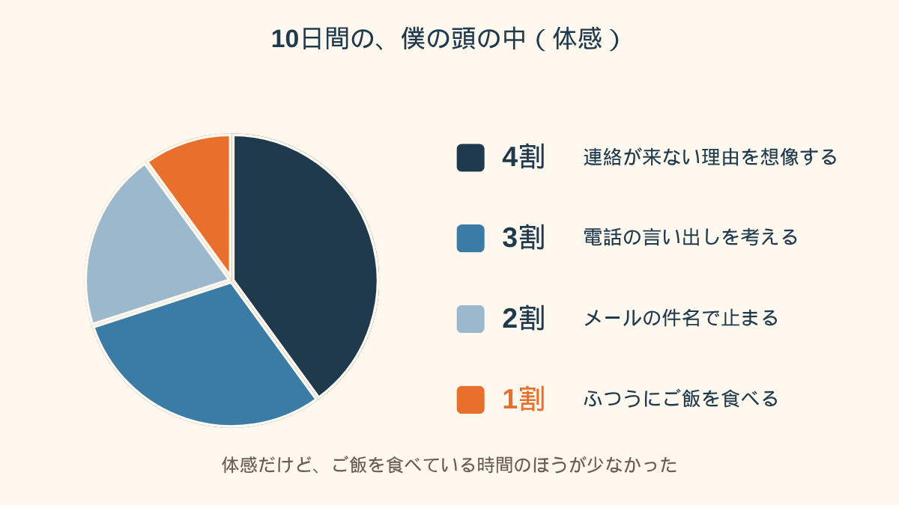
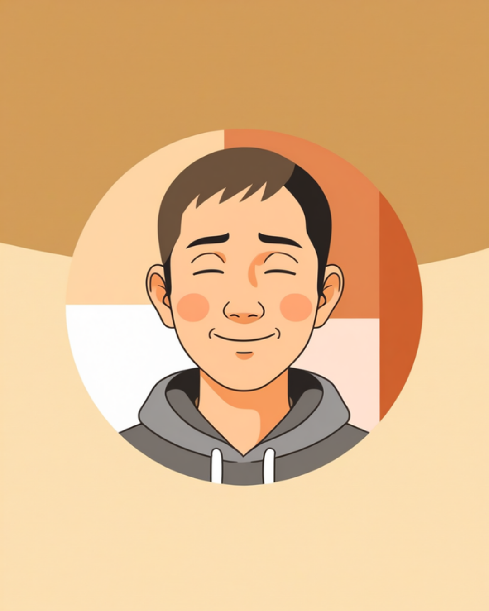
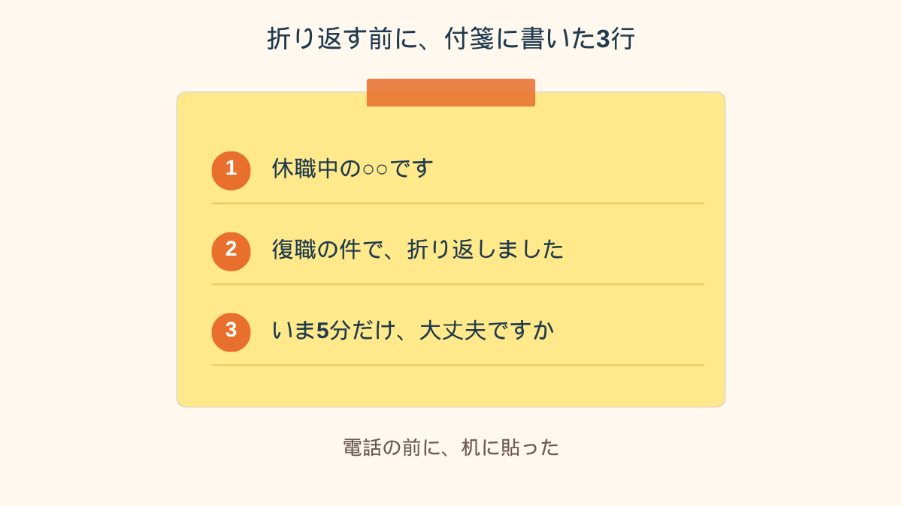

会社からは、今月に入ってから、ひとこともなくて。
「僕、忘れられてるのかな」
そう思ったら、冷蔵庫を開けたまま、しばらく動けなくなりました。
毎月来ていたメールが、先月から来ない
29歳、食品メーカーで営業をしてました。
休職4ヶ月目。
期限は10月末で、復職予定日は11月1日、と最初の面談で聞いてました。
最初の3ヶ月は、人事から月に1回、「体調いかがですか」というメールが来てたんです。
正直、あれが嫌で。
返信に毎回2時間くらいかかってたし、「元気そうに見えないように、でも心配させすぎないように」って、よく分からない文章を書いてた。
それが、先月分から来ない。
来なかったら来なかったで、ざわざわするんですよ。
あんなに嫌だったのに。
自分でも勝手だなと思って、ちょっと笑いました。笑ったあとで、笑えなくなったんですけど。
主治医は先週、「11月からなら、戻れそうですね」と言ってくれて、診断書も書いてもらいました。
紙はもう、カバンに入ってる。
でもその紙を「誰に、どうやって出せばいいのか」が、分からなかった。

想像だけが大きくなる10日間
連絡が来ない理由を、勝手に考え始めました。
席が、もうないのかもしれない。
上司は「戻ってこなくていい」と思ってるのかもしれない。
こっちから何も言わなかったから、自然に辞めたことになってたりして。
夜中の1時に、就業規則のPDFを開きました。
休職の章を3回読んで、「期間満了」の4文字だけが、頭に残った。
こっちから連絡する、という選択肢も、もちろん浮かんでました。
でも、そこからが長くて。
上司の直通にかけたら、隣の席の後輩が取るかもしれない。
後輩の名前まで、はっきり浮かんで、やめた。
代表番号にかけるなら、受付の人に「休職中の○○です」と言わなきゃいけない。
それが、どうしても言えなかった。
メールにしようと思って、今度は件名で40分止まりました。
「ご連絡」「復職について」「お世話になっております」。
下書き保存のまま、3日。
送ってない文章なのに、頭の中では何十回も送って、何十回も怒られてた。
「復職の連絡って、休職するときの連絡よりずっと勇気がいりました。休むときは、もう限界で勢いがあったんです。戻るときは、勢いがない。下書きを5回消して、結局夜中の2時に送信。送ったあと、胃がきゅーってなって、朝までスマホを裏返してました。返信は昼前に来て、3行だけで、拍子抜けでした」

鳴った電話に出られなくて、付箋を書いた
結局、僕は人事に短いメールを送りました。
水曜の夜、11時すぎ。
「休職中の○○です。11月1日の復職について、何をすればいいか教えてください」
これだけ。
送信ボタンを押した手が、ちょっと震えてたのを覚えてます。
翌日の昼、スマホが鳴りました。
画面に出た会社の番号を見た瞬間、反射的に伏せた。
出られなかったんです。
着信は、3回鳴って、切れました。
そのあと台所の引き出しから付箋を出して、3行だけ書きました。
自分の名前を言う。
復職の件で折り返したと言う。
「いま5分だけ大丈夫ですか」と聞く。
それを机に貼って、10分くらい眺めてから、かけ直しました。

かけ直したら、人事の人は、意外なくらい明るい声でした。
「あ、ご連絡ありがとうございます。実は、お待ちしてたんです」
…待ってた？
お互いに、待っていた
話を聞くと、こうでした。
復職のときは、本来は本人から、2週間前くらいに連絡をもらう流れだった。
そのうえで、産業医の面談を先に入れる必要があって、日程の調整にも時間がかかる。
だから連絡が来るのを、会社のほうも待っていた、と。
休職に入った最初の面談で、たぶん説明はされてたんだと思います。
でも、あの頃の僕は、話の半分も入ってなかった。
僕は、会社が連絡をくれるのを待ってた。会社は、僕が連絡するのを待ってた。
10日間、お互いに待ってただけ。
産業医の面談は、一番早くて来週の木曜になりました。
なので、復職は11月1日から、11月15日にずれ込みました。
がっかりしたのが半分で、ほっとしたのも半分。
正直、11月1日からフルで動ける自信は、なかったので。
「会社も僕が連絡するのを待ってたって聞いて、脱力しました。怒っていいのか、笑っていいのか。10日間、何だったんだろうって。でも、だったら最初から言っといてよ、って気持ちも、まだちょっとあります。あと、連絡が来なかった本当の理由は、結局分からないままです。人事が忙しかっただけなのかもしれないし」

この記事に、聞いてみたいことはありますか？
「自分の場合はどうなんだろう」と思ったことを、気軽に書いてみてください。いただいた質問は個別にお返事したうえで、匿名で記事にすることがあります。